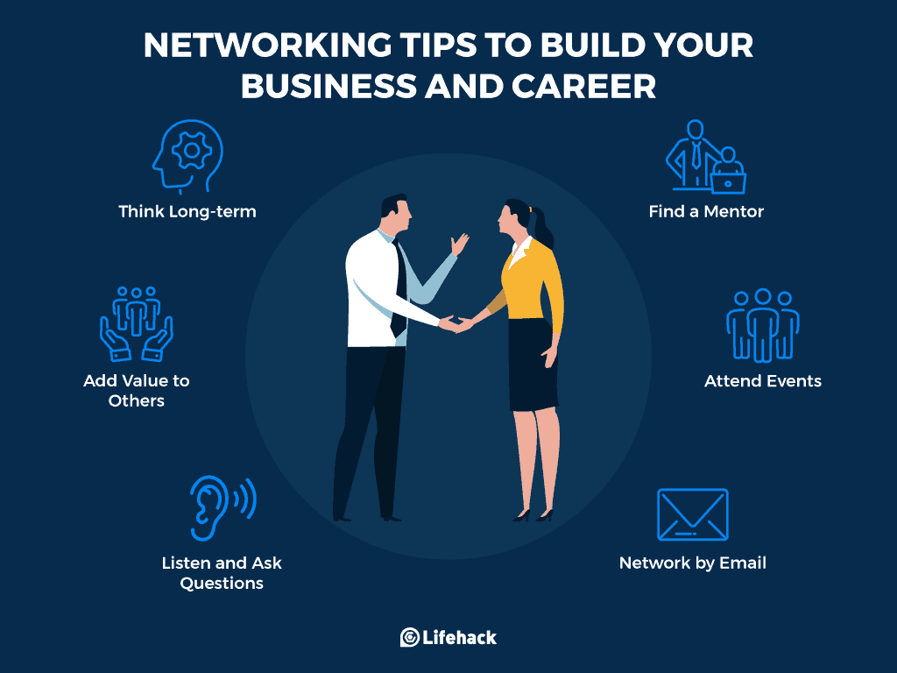

Introduction
Networking is the process of building relationships with people who can help you in your career. It can be done through formal events, such as conferences and networking meetups, or through informal interactions, such as meeting new people at work or in your social circles.
Networking is an important skill for anyone who wants to succeed in their career. It can help you find a job, get promoted, and learn new things.
Benefits of Networking
- Find a job
- Get promoted
- Learn new things
- Make new friends
- Build your personal brand
Tips for Networking
- Be yourself Be interested in other people Be a good listener Follow up